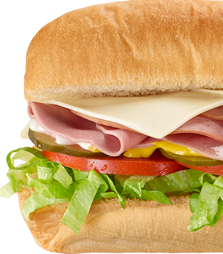

Subway
in The US of year 2023
in The US of year 2023

Subway, the iconic fast-food chain known for its fresh and customisable sandwiches,
is a global sensation that has captured the hearts and taste buds of millions.
With a history that spans over five decades, Subway has become a staple in the world of fast,
healthy, and delicious dining.
This introduction will take you on a delectable journey through the enticing world of Subway, the extensive network of Subway restaurant locations, their standing in the fast food industry, and their unwavering commitment to providing healthier nutritional choices for their customers.